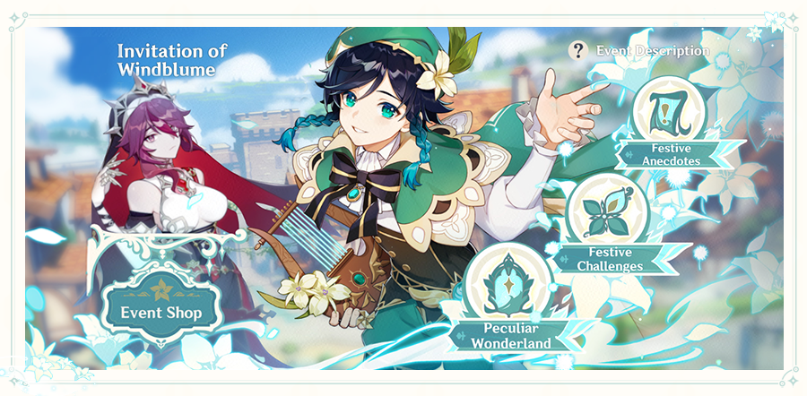

Rayakan dan nikmati pujian atas kebebasan dan cinta!
Jelajahilah padang rumput Mondstadt yang hijau, berjalanlah di tengah keramaian orang-orang yang sedang menikmati festival, dan ikutilah tur yang penuh dengan puisi dan bunga — perjalanan Festival Windblume-mu dimulai di sini.
Event "Undangan Windblume" akan dimulai! Selama event berlangsung, selesaikan tantangan di Festival Windblume untuk mendapatkan Festive Tour Ticket dan Peculiar Collab Coupon. Tukarkan kedua kupon ini di Toko Event dengan Senjata eksklusif Windblume Ode (Bow), material refinement eksklusif Windblume Ode: "Visible Wind", Crown of Insight, dan hadiah lainnya!
〓 Syarat Partisipasi 〓
Rank Adventure Lv. 20 ke atas
Telah menyelesaikan Prolog: Bag. III — "Lagu Naga dan Kebebasan"
〓 Waktu Event 〓
Event Terbuka: 2021/03/19 10:00 — 2021/04/05 03:59 (Waktu server)
Toko Event Terbuka: 2021/03/19 10:00 — 2021/04/12 03:59 (Waktu server)
〓 Rincian Event 〓
Event Undangan Windblume dibagi menjadi 3 bagian: "Anekdot Perayaan", "Tantangan Perayaan", dan "Peculiar Wonderland". Sekarang kami akan menjelaskan masing-masing konten tersebut kepada kalian!
Read more...